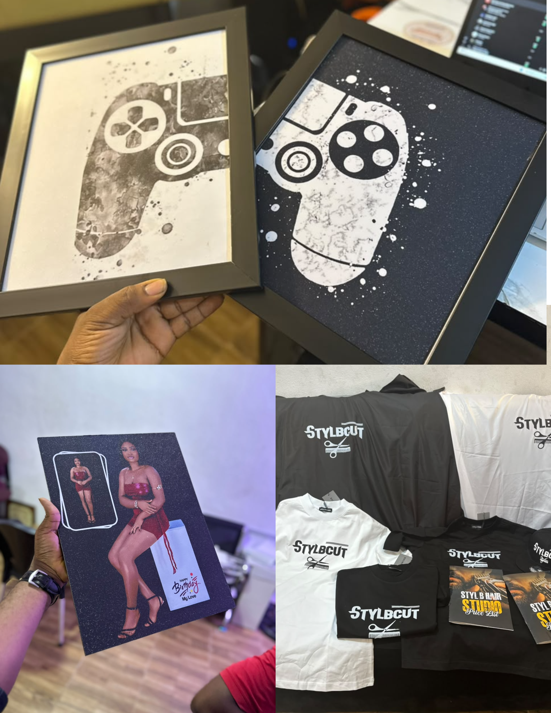

Aesthetics

Merchandise & Print Design / Custom Branding
Art in Ink
A dynamic visual merchandise study exploring high-contrast illustrations, custom apparel printing, and localized brand identity assets. The concept considers how textured graphics, bespoke portrait frames, and uniform typography come together to create a cohesive physical brand presence.
Preview ↗